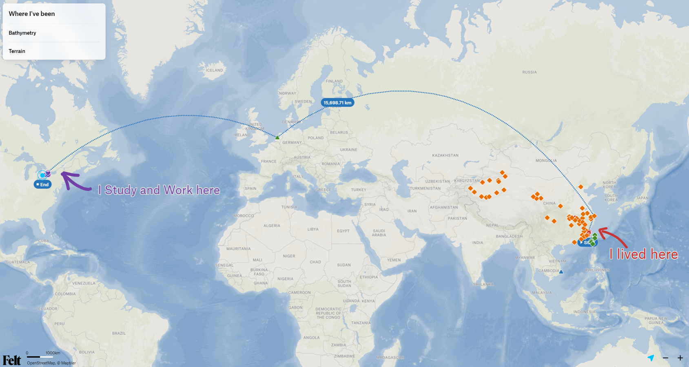

Data & automation
- Python
- SQL
- R
- C#
- MS Azure
- Databricks
- PostgreSQL
- Google APIs
- Data pipelines
- Medallion architecture
- Automation workflow
- QA/QC
I work across data engineering, analytics and GIS.
您好，我是徐沛韜，專注於數據工程、數據分析與地理信息系統（GIS）。
At Ontario Ministry of Natural Resources, I support the Forest Resources Inventory program by analyzing geospaital vector and raster data with GIS, building data pipelines with Python, SQL, Azure and Databricks, automating data quality checks, and developing Tableau dashboards for analysis and reporting. My background in civil engineering and BIM helps me connect data workflows with environmental and infrastructure needs.
目前，我在 安大略省自然資源部 森林資源清查計畫 工作，
使用GIS分析地理空間矢量和柵格數據，運用 Python、SQL、Azure 與 Databricks 建置數據管道、自動化數據品質檢查與更新，
並以 Tableau 製作分析與報告儀表板。
我的土木工程與 BIM 背景，這些經理讓我能將數據工作與環境及基礎設施需求連結。

–
Western University, Canada
–
Fanshawe College, Canada
–
Wuhan University of Technology, China
–
Wuhan University of Technology, China
Colors match the filters and skill tags in Experience below.
Forest Resources Inventory (FRI) Unit · Sault Ste. Marie, ON · Full-time
Developed Python and SQL workflows using Microsoft Azure and Databricks to clean and standardize forest inventory data, creating curated Gold-layer datasets with supporting metadata for reusable Tableau reporting.
Validated and analyzed spatial and tabular data for eight Crown Forest inventories using ArcGIS Pro and Python; developed interactive Tableau dashboards for forest-level analysis and cross-forest comparisons.
Developed SQL data models and Databricks dashboards to track photo-interpretation QA/QC results, vendor progress and weekly targets, supporting contract planning and management reporting.
Created Tableau dashboards for FRI management and the Provincial Forest Inventory Advisory Committee to monitor tasks and project progress; built Tableau Prep workflows to standardize data preparation and automate reporting refreshes.
Prepared field plot maps and presentation materials for field technicians and project stakeholders, supporting field planning and communicating spatial information to technical and non-technical audiences.
Drinking Water and Environmental Compliance Division · Toronto, ON · Internship
Developed Python scripts to automate NAPS air quality data processing, reducing workload; contributed to presentations, documentation, field sampling and quality control.
Integrated and analyzed excess soil site data in Ontario using ArcGIS Pro and ArcGIS Online; maintained compliance maps.
Assisted in digitizing historical documents and performing QA/QC to maintain long-term data integrity and accessibility.
Shanghai, China / London, ON, Canada · Remote, project-based
Led a 3-person remote team to deliver a machine learning and geospatial analysis project within a 3-month timeline, coordinating tasks and producing heatmaps and spatial design outputs using ArcGIS, Python and Adobe Illustrator.
Developed a natural language processing (NLP) model analyzing relationships between signboards, social activity, physical flow and social media data, generating data-driven insights for urban infrastructure design.
Fuzhou, Fujian Province, China · Permanent full-time · On-site
Led a team reviewing 1,000+ BIM reports, assessed smart city and green construction solutions, and compiled a trend report.
Performed statistical analysis and visualization for prefabricated building design.
Conducted experimental and finite element analysis on large-span precast floors, promoting sustainable design.
Fuzhou, Fujian Province, China · Permanent full-time · On-site
Conducted experimental and numerical analysis using a scaffolding-free method to improve efficiency and reduce emissions.
Developed and maintained Smart-Part programs in ALLPLAN, increasing work efficiency across 6 projects.
Produced drawings and BIM models using AutoCAD, Revit and Tekla for 20+ projects, including Asia-Pacific Plaza and Kenya Central Bank Tower.
Performed experimental and finite element analysis leading to patented prefabrication technology and published research.
Collaborated with a team to compile 5 provincial standards promoting sustainable construction.
School of Civil and Architecture Engineering · Wuhan, Hubei, China · Apprenticeship
–
–
Internship · Wuhan, Hubei, China · On-site
Internship · Fuzhou, Fujian Province, China · On-site
Internship · Fuzhou, Fujian Province, China · On-site
–
Supported planning and coordination for the 2026 Mapathon, collaborating with the executive team and colleagues across ministries on event delivery and participant engagement.
–
Developed and maintained the Western Science Rendezvous website, and designed event maps, passports, social media posters and videos. Coordinated promotional work across committees and with the national executive team.
–
–
–
–
–
–
Organized student union activities, launched the “Instant Chats” livestreaming platform with 15,000+ views, and led the union to win the “Outstanding Graduate Student Union” award.
